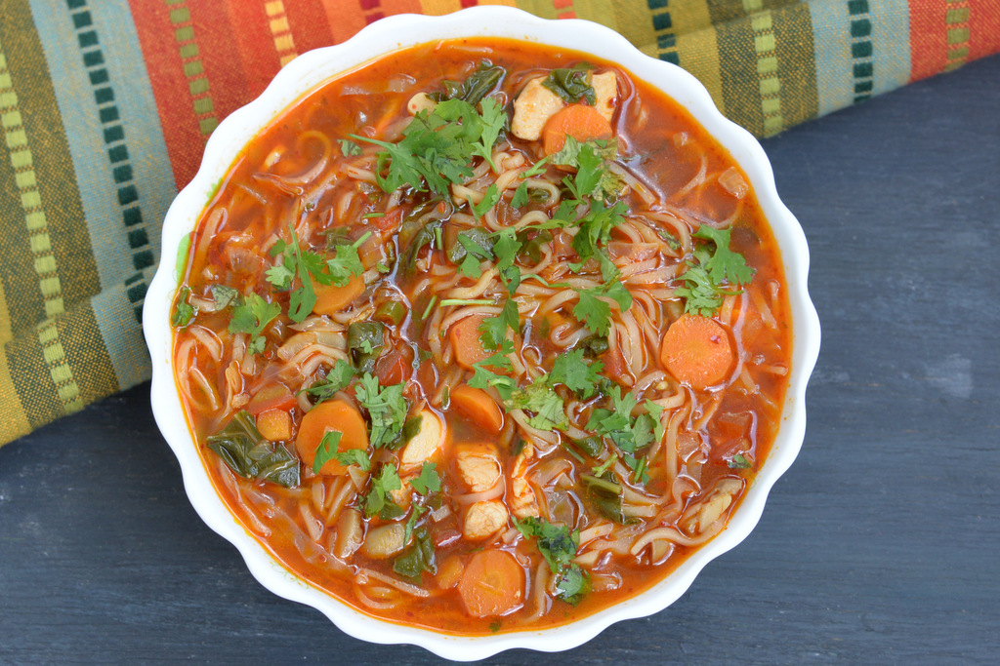

Thukpa

Description
Thukpa is essentially a dish of Darjeeling but finds its
roots in the Tibetan cuisine. A hot-noodle soup, Thukpa comprises of many
veggies, some customary tinge of spices, and Hakka noodles. It is one of
the most admired dishes within the town and is available at almost all the
restaurants and roadside stalls.
Ingredients
- Noodles (egg noodles or rice noodles)
- Vegetable or chicken broth
- Garlic (minced)
- Ginger (minced)
- Onion (chopped)
- Cabbage (shredded)
- Chicken (sliced, optional for protein)
- Tomatoes (chopped)
- Turmeric powder (optional)
- Cilantro (chopped, for garnish)
- Salt 1tbps
- Thukpa Masala 1tbps
Steps
-
Cook the noodles according to the package instructions. Drain and set
aside.
- In a large pot, heat a little oil over medium heat.
-
Add minced garlic and ginger, and sauté until fragrant (about 1 minute).
- Add chopped onions and cook until they become translucent.
- Pour in the vegetable or chicken broth.
- Bring to a boil, then reduce the heat and let it simmer.
- Add the sliced chicken to the simmering broth.
- Cook until the chicken is done (about 5-7 minutes).
-
Add shredded cabbage and any other vegetables you like (e.g., carrots,
bell peppers).
- Add the cooked noodles to the pot.
- Season with salt, pepper, and a splash of soy sauce to taste.
- Ladle the thukpa into bowls.
- Garnish with chopped cilantro and green onions if desired.